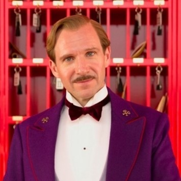
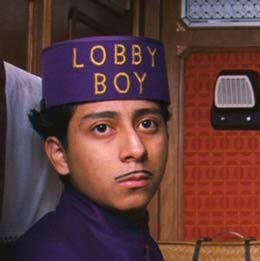
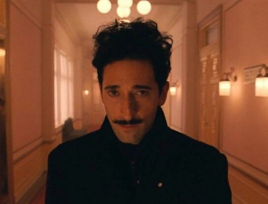
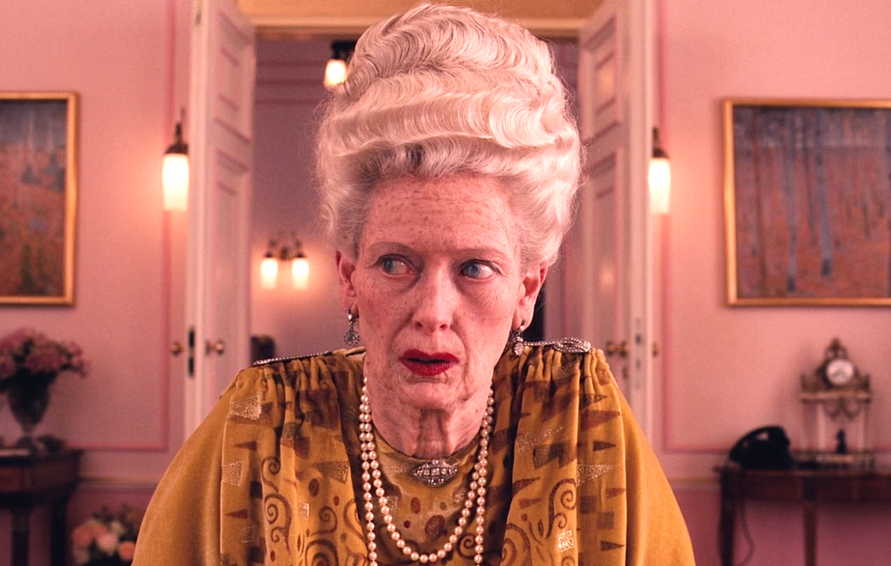

Wesley Wales Anderson (born May 1, 1969) is an American filmmaker.
His films are known for their eccentricity and unique visual and narrative styles. They often contain themes of grief,
loss of innocence, and dysfunctional families. Cited by some critics as a modern-day example of the work of an auteur,
three of Anderson's films have appeared in BBC Culture's 2016 poll of the greatest films since 2000.
Main Cast>

Ralph Fiennes M. Gustav
Actor Ralph Nathaniel Twisleton-Wykeham-Fiennes was born on December 22,
1962 in Suffolk, England, to Jennifer Anne Mary Alleyne (Lash), a novelist, and Mark Fiennes, a photographer.
He is the eldest of six children. Four of his siblings are also in the arts: Martha Fiennes, a director; Magnus Fiennes,
a musician; Sophie Fiennes, a producer; and Joseph Fiennes, an actor. He is of English, Irish, and Scottish origin.

Tony Revolori Zero
Anthony Revolori ( born April 28, 1996) is an American actor.
He is best known for his role as Zero Moustafa in The Grand Budapest Hotel (2014),
for which he was nominated for numerous acting awards, and Flash Thompson in the Marvel Cinematic Universe films Spider-Man: Homecoming (2017),
Spider-Man: Far From Home (2019) and Spider-Man: No Way Home (2021).

Adrien Brody Dmitri
Adrien Nicholas Brody (born April 14, 1973) is an American actor. He received widespread recognition
and acclaim after starring as Władysław Szpilman in Roman Polanski's The Pianist (2002), for which he won the Academy Award for Best Actor at age 29,
becoming the youngest actor to win in that category. Brody is the second male American actor after Christopher Lambert to receive the César Award for Best Actor.

Tilda Swinton Madame D.
Katherine Matilda Swinton (born 5 November 1960) is a British actress. Known for her roles in independent films and blockbusters,
she has received various accolades, including an Academy Award and a British Academy Film Award, in addition to nominations for three Golden Globe Awards
and five Screen Actors Guild Awards. In 2020, The New York Times ranked her as one of the greatest actors of the 21st century.